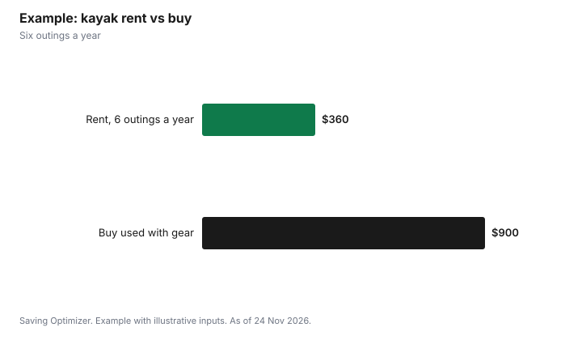

Sports · Canada
Kayak and Canoe: Buy or Rent?

Rent a kayak or canoe if you paddle a few times a year; buy if you'll paddle often and have somewhere to store it and a way to carry it. Owning adds paddles, a lifejacket for each person, a roof rack, storage and the safety gear Transport Canada requires. Count your paddling days and compare the total before you buy, and look at used boats first.
Key takeaways
- Renting wins for a few outings a year. Buying wins if you paddle often.
- Owning costs more than the boat: paddles, lifejackets, a roof rack, storage and safety gear.
- Transport Canada requires a lifejacket or PFD for each person, plus other safety equipment, on human-powered boats.
- Used boats can cost far less than new. Check the hull for cracks and soft spots.
- Example: renting costs $360 for six outings; buying used costs $900 up front, so you break even after about 15 outings.
The costs of owning
| Item | Example cost |
|---|---|
| Used kayak | $500 |
| Paddle | $80 |
| PFD | $100 |
| Roof rack or foam blocks | $150 |
| Safety kit (heaving line, bailer, whistle) | $70 |
| Total | $900 |
Required safety gear
Transport Canada's Safe Boating Guide lists minimum safety equipment for human-powered boats like kayaks and canoes: a Canadian-approved lifejacket or PFD for each person, a buoyant heaving line, a bailer or bilge pump, a sound-signalling device such as a whistle, and navigation lights if you paddle at night or in poor visibility. Renting usually includes this gear.
Buying used
- Inspect the hull for cracks, deep gouges and soft spots.
- Check seats, hatches and bulkheads.
- Paddle it before you buy if you can.
- Ask what's included: paddle, skirt, PFD.
- Compare with end-of-season sales at outfitters.
Plan: an example
These are example prices, not quotes. Renting a kayak costs an example $60 a day. Buying used with gear costs $900.

Six outings a year rented: 6 × $60 = $360. Buying used: $900 up front. Break-even: $900 ÷ $60 = 15 outings, or about 2.5 years at six outings a year. You can also resell a used boat later. For camping trips, see Parks Canada camping tips.
Sources
- Transport Canada, Safe Boating Guide (minimum safety equipment for human-powered pleasure craft), checked 24 Nov 2026.
Frequently asked questions
Is it cheaper to rent or buy a kayak?
Renting is cheaper for a few outings a year. Buying is cheaper if you paddle often; in our example, the break-even is about 15 outings.
What safety gear do I need for a kayak or canoe in Canada?
Transport Canada lists a lifejacket or PFD for each person, a buoyant heaving line, a bailer or pump, a sound-signalling device and lights at night or in poor visibility.
Do I need a licence to paddle a kayak?
A Pleasure Craft Operator Card is for powered boats. Paddlers don't need one, but must carry the required safety gear.
What should I check on a used kayak?
Cracks, gouges, soft spots, seats, hatches and what's included.
What does owning a kayak cost beyond the boat?
Paddles, a PFD, a roof rack, storage and safety gear.
Researched and drafted with AI assistance and fact-checked against official Canadian sources. How we create content.
Note: Amounts are examples. Check Transport Canada's rules for your boat. Education only.